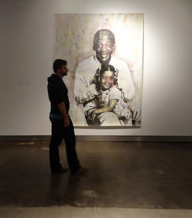
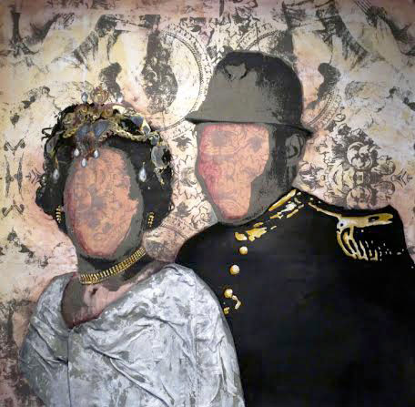

Tyanna Buie
Tyanna Buie’s checkered past has made her into the artist that she is today. In and out of foster care as a child, abused, and little knowledge as to where she came from, she is searching for, discovering and re-writing her history through her large scale screen print images. Images that portray a lost childhood doll that gets left behind when she was moved from one home to another, a family portrait with their faces blank, and her uncle’s mugshot to instill his face into her memory and the family’s record of him. All of these hauntingly beautiful pieces speak wonders to the depth of Buie as an artist.
She describes her work as a forensic process, saving every bit of information she can find and relaying it back to her art. Prodded to explore making serious work about her childhood from her mentor, the response has been very moving and widely supported by the Milwaukee arts community. A 2013 recipient of the coveted Mary Nohl grant, part of the Wisconsin 30 adjoint exhibit to the nationally recognized 30 Americans, and new member of the new studio collective Pitch Project with Jason Yi, Buie is leaving her mark in Milwaukee and in the art world.
amfm: Despite your story, you appear to be the most humble, jubilant, and quite funny person and you found solace in art at a young age to cope with your struggles. How do you find humor and happiness and calm even though you are very much ingrained in your work which is about your lost childhood?
tyanna buie: There is one thing that I’ve always been able to do, even as a child, which was to find solace during chaotic situations. I was able to look beyond my particular situation, to a more hopeful scenario. At six years of age, I knew that I was in the foster care system, which is meant to be temporary, therefore, the idea that I would be able to be re-united with my birth parents someday, was all the hope I needed to help me through the difficult times while in foster care. Unfortunately, I was not re-united with my parents, but I found other ways to keep the faith through fantasizing about the life I wanted to live when I was old enough to take charge of my own life.
amfm: Your work is usually very large scale, how do you work on these pieces? Do you work on them as a whole or in pieces?
buie: I definitely have to work on the larger scale works in separate smaller pieces. I find that it is much more practical to work that way. I can easily transport the work and assemble the work on site.
amfm: How did you get into your signature style of screen printing? and how do you feel that this type of medium speaks to your work? especially with your work and process being described as a sort of “journalistic approach” in researching your childhood. Can you describe how searching for some semblance of your childhood memories is like a forensic process for you?
buie: I was introduced to screen-printing in undergraduate school, which was completely accidental. I was a graphic design major, and I was also very interested in metalsmithing. I was attracted to graphic design because of the design aspect, and metalsmithing because of its hands-on approach. Once I had taken the screen-printing class, I was hooked! It was the perfect marriage of design and technical skill. I was able to use a variety of skills to create something. The screen-printing process has been very vital in my journalistic approach. The layering and photographic techniques help me to illustrate my story and make the visual narrative approachable by viewers. I am in constant search to know and understand my history. In my family, and probably most families, if you don’t ask, you will never know. This has always intrigued me, which has prompted me to ask a great deal of questions, and find out more about my scattered family history. I am constantly peeling back multiple layers of my past in hopes of gaining a deeper understanding.
amfm: Your art seems to have sparked something and you have hit the ground running, with this only being the beginning. What was that aha moment, that catalyst? how have you been taking all of this in?
buie: My “aha!” moment came when I first started making work that was meaningful to me, which has been my catalyst. I’ve also learned that no matter what happens throughout my life, I must continue to teach and make and show work.
amfm: What was your reaction to being the first African American woman to receive the Mary Nohl grant? How do you think this will open doors for other black women artists? I read that you tossed around the idea of making art about race, but realized that wasn't the story you were meant to tell. What do you think it means to be a black artist in America today?
buie: It’s interesting that I did not know I was the first African-American woman to win the Nohl until I read it in the paper. I was surprised! There are some great African-American women artists in Milwaukee that I thought would have won the Nohl and deserve to. I think that anything that has been accomplished opens the door for anyone and everyone. For me, what it means to be a black artist in America today is that anything is possible. Make work about whatever you find significant to you. It is not necessary to feel as though your art has to educate the world about your race and culture. I think it’s a false burden for artists of color. Whatever seems relevant for you, do it!amfm: How does teaching about art differ from being an artist?
buie: I do not see a difference in teaching about art and being a practicing artist. I think anytime you have an exhibition or give an artist talk, you are educating the public about art. Whether it’s about your artistic journey, or your techniques and medium, you are teaching what you know and what comes natural to you. That’s exactly how I view teaching about art.amfm: What kind of art were you doing before you began searching for your childhood? What was that conceptual breakthrough you had at the end of grad school, and how did your mentor Susan Czechowski push you to the next level of your art? Do you think you would have gone there had she not prodded you to?
buie: Before I made meaningful work, or work that is narrative based, I created a series of random work that was more about technique. The conceptual breakthrough that I had at the end of graduate school is that it is not necessary for me to visually illustrate everything at once, but create pieces that tell a story from fragmented memories. Susan was a great mentor and definitely pushed me to think deeply about my work and consider my intentions when making work. I think eventually I would have figured this out, but I was fortunate to have someone challenge me early on.amfm: You said you want to know what makes us, do you believe that our family roots or lack thereof make us who we are? Do you believe if you had had that you would still be making art today? What have you found in searching for what makes us?
buie: I definitely believe that knowledge about one’s family history and culture, or lack thereof, shapes the individual. Our history teaches us who and to be. I believe that I was born to create. Whether I came from a traditional family or not, I would still be making some form of art.amfm: In what ways is your work fantasy? You mentioned that your pieces become exaggerated events. How do your memories become symbols of the lack of memories or mementos or take the place of bad memories?
buie: There is a small part of my work that is fantasy, and a larger part that is a re-telling of the truth. There are key moments where the images that I am depicting become exaggerated through the use of materials and scale. These are moments in the work where the aspect of collage is present. When a person remembers something, it’s very rare to remember every detail of the event, but to recall key significant moments. I treat those key moments as if they are symbols. I imagine telling someone the story through pictures only. This allows me to present my work in a universal way.amfm: The Bill Cosby piece at INOVA for the Mary Nohl was one of the first pieces I had seen of yours with a face. Why did you choose this iconic figure to put a face to? Why do your other pieces remain faceless?
buie: That is true! I am glad you noticed that. The faceless images are usually from family photos. They are faceless, because I want the viewers to see themselves and identify with the work on a personal level. I want it to be less about my story by prompting the viewers to think about their own story. Choosing to keep Bill Cosby’s face in the work is definitely because he is an icon and easily recognizable. For the most part, most people have seen his show; therefore, there is some type of an association when his face appears. I have spoken to many people since the Nohl exhibition and they have told me their personal connection to the Bill Cosby show. I created the work with my own familiarity to the show in mind. I originally wanted to obscure his image as well, but I decided that I wanted to provoke viewers to find their own connection to the image of Bill Cosby with his six year-old stage daughter in his lap.amfm: How do you think Milwaukee has shaped you or help you grow as an artist? What do you think of the current art scene here?
buie: Milwaukee is and has been vital to me as an artist. There is so much love, respect, and appreciation for visual artists here. I am able to thrive here because of the positive environment. I think that is a key ingredient to success, having a great environment. I think the art scene here is great! The artists here are always up to something.amfm: Even though searching for your childhood and sense of home could be a forever process and constantly evolving, what are some other themes you are interested in exploring in your art?
buie: Good question! I’m currently thinking about popular culture and how it has also shaped me and has always played a significant role in my life. Television practically raised me! I got a lot of my ideals from television shows and magazines. I’m not sure where I’m going with this visually quite yet, but it seems like a good start.
|  |  |
For more from Tyanna Buie:
photo credits: tyanna buie